进一步讨论损失函数#
0-1损失函数#
在分类问题中，可以使用函数的正负号来进行模式判断，函数值本身的大小并不是很重要，0-1损失函数比较的是预测值$f_\mathbf{w}\left ( \mathbf{x}^{\left ( i \right )} \right ) $与真实值$y^{\left ( i \right )} $的符号是否相同，0-1损失的具体形式如下： 以上的函数等价于下述的函数： 0-1损失并不依赖$m$值的大小，只取决于$m$的正负号。0-1损失是一个非凸的函数，在求解的过程中，存在很多的不足，通常在实际的使用中将0-1损失函数作为一个标准，选择0-1损失函数的代理函数作为损失函数。
平方损失函数（Square Loss）#
最小二乘法（OLS）是线性回归的一种，其基本原则是：最优拟合曲线应该使得所有点到回归直线的距离和最小。OLS将问题转化成了一个凸优化问题。在线性回归中，它假设样本和噪声都服从高斯分布，最后通过极大似然估计（MLE）可以推导出最小二乘式子。最小二乘的基本原则是： 最优拟合直线应该是使各点到回归直线的距离和最小的直线，即平方和最小 。
对于训练数据样本$(x_i,y_i)$，我们有如下的拟合直线：
平方损失的损失函数为：
指数损失函数（Exponential Loss）#
指数损失#
指数损失是0-1损失函数的一种代理函数，指数损失的具体形式如下：
运用指数损失的典型分类器是AdaBoost算法。
AdaBoost基本原理#
AdaBoost算法是对每一个弱分类器以及每一个样本都分配了权重，对于弱分类器$φ_j$的权重为： 其中，$R(φ_j)$表示的是误分类率。对于每一个样本的权重为： 最终通过对所有分类器加权得到最终的输出。
两者的等价#
对于指数损失函数： 可以得到需要优化的损失函数： 假设$\tilde{f}$表示已经学习好的函数，则有： 而： 通过最小化$φ$，可以得到： 将其代入上式，进而对$θ$求最优解，得： 其中， 可以发现，其与AdaBoost是等价的。
铰链损失函数（Hinge Loss）#
Hinge损失#
Hinge损失是0-1损失函数的一种代理函数，Hinge损失的具体形式如下： 运用Hinge损失的典型分类器是SVM算法。
SVM的损失函数#
对于软间隔支持向量机，允许在间隔的计算中出现少许的误差$\vec{\xi }=\left ( \xi _1,\cdots ,\xi _n \right )$，其优化的目标为： 约束条件为：
两者的等价#
对于Hinge损失： 优化的目标是要求： 在上述的函数$f_\mathbf{w}\left ( \mathbf{x}^{\left ( i \right )} \right )$中引入截距$γ$，即： 并在上述的最优化问题中增加$L2$正则，即变成： 至此，令下面的不等式成立： 约束条件为： 则Hinge最小化问题变成： 这与软间隔的SVM是一致的，说明软间隔SVM是在Hinge损失的基础上增加了$L2$正则。
对数损失函数#
对数损失函数用到了极大似然估计的思想。$P(Y|X)$通俗的解释就是：在当前模型的基础上，对于样本$X$，其预测值为$Y$，也就是预测正确的概率。由于概率之间的同时满足需要使用乘法，为了将其转化为加法，我们将其取对数。最后由于是损失函数，所以预测正确的概率越高，其损失值应该是越小，因此再加个负号取反。log损失函数的标准形式：
逻辑斯特回归的损失函数就是对数损失函数，在逻辑斯特回归的推导中，它假设样本服从伯努利分布（0-1）分布，然后求得满足该分布的似然函数，接着用对数求极值。逻辑斯特回归并没有求对数似然函数的最大值，而是把极大化当做一个思想，进而推导它的风险函数为最小化的负的似然函数。从损失函数的角度上，它就成为了log损失函数,并且逻辑回归返回的sigmoid值是处于(0,1)区间，不会取到0,1两个端点。因此我们能够将其损失函数写成以下形式：
-
当真实值y=1时，$L(\hat y,y)=-\log\hat y $，当预测值$\hat y$越接近1，$\log\hat y $也越接近最大值1，加上负号后就代表误差值最小。而当预测值$\hat y$越接近0，$\log\hat y $越接近负无穷，加上负号后就代表误差值最大。
-
当真实值y=0时，$L(\hat y,y)=-\log(1-\hat y) $，当预测值$\hat y$越接近0，$\log(1-\hat y) $也越接近最大值1，加上负号后就代表误差值最小。而当预测值$\hat y$越接近1，$\log(1-\hat y) $越接近负无穷，加上负号后就代表误差值最大。
在逻辑回归中，使用sigmoid函数作为激活函数，则预测函数为：
则损失函数为：
这也就是交叉熵损失函数公式。
Softmax用于多分类过程中，它将最终分类的结果，映射到(0,1)区间内， 公式为：
假设神经元的输出设为：
其中$w_{ij}$是第$i$个神经元的第$j$个权重，$b$是偏移值。$z_i$表示该网络的第$i$个输出。 给这个输出加上一个softmax函数，则：
损失函数为交叉熵损失函数公式为：
对参数项求导为： softmax损失是sigmoid损失的多分类形式。在进行softmax损失函数的反向传播时，由于输出为one-hot形式，也就是说，我们只对期望的那一项求对数，其余项相乘都为零，所以减少了计算量。
Large-Margin softmax loss#
当定义第 $i $个输入特征 $X_i $以及它的标签 $y_i$时，softmax loss 记为：
其中$f_j $表示最终全连接层的类别输出向量 $f$的第$j $个元素, $N $为训练样本的个数。由于 $f$ 是全连接层的激活函数 $W$ 的输出，所以$f_{yi} $可以表示为$ f_yi=W^T_{yi}x_i$, 最终的损失函数又可以写为：
初始的softmax的目的是使得$\mathbf{W}_1^{T}\mathbf{x} \gt \mathbf{W}_2^{T}\mathbf{x} $即$\Vert\mathbf{W}_1\Vert\Vert\mathbf{x}\Vert cos(\theta_1) \gt \Vert\mathbf{W}_2\Vert\Vert\mathbf{x}\Vert cos(\theta_2) $，从而得到 $x$ （来自类别1）正确的分类结果。作者提出large-magrin softmax loss的动机是希望通过增加一个正整数变量 $m$，从而产生一个决策余量，能够更加严格地约束上述不等式，即：
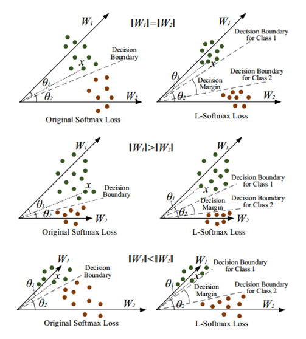
其中$0≤θ1<πm$。如果 $W1$ 和 $W2$ 能够满足$\Vert\mathbf{W}_1\Vert\Vert\mathbf{x}\Vert cos(m\theta_1)\gt \Vert\mathbf{W}_2\Vert\Vert\mathbf{x}\Vert cos(\theta_2) $，那么就必然满足$\Vert\mathbf{W}_1\Vert\Vert\mathbf{x}\Vert cos(\theta_1) \gt \Vert\mathbf{W}_2\Vert\Vert\mathbf{x}\Vert cos(\theta_2) $。这样的约束对学习$W_1$ 和$ W_2$ 的过程提出了更高的要求，从而使得1类和2类有了更宽的分类决策边界。则L-Softmax loss可写为： 在这里，$ψ(θ)$ 可以表示为： 当 $m$ 越大时，分类的边界越大，学习难度当然就越高。同时，公式中的 $D(θ)$ 必须是一个单调减函数且$\mathcal{D} (\frac{\pi}{m})=cos(\frac{\pi}{m}) $， 以保证$ ψ(θ)$是一个连续函数。 作者为了能够简化前向和后向传播，构建了这样一种函数形式$ψ(θ)$： 其中$k$ 是一个整数且 $k∈[0,m−1]$。
softmax loss 和L-Softmax loss的比较：
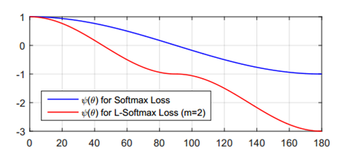
Angular softmax loss#
回顾一下二分类下的Softmax后验概率，即：
显然决策的分界在当$p_1=p_2$时，所以决策界面是$(W_1−W_2)x+b_1−b_2=0$。我们可以将$W^T_ix+b_i$写成$|W_i^T|\cdot|x|\cos(\theta_i)+b_i $，其中$θ_i$是$W_i$与$x$的夹角，如对$W_i$归一化且设偏置$b_i$为零，那么当$p_1=p_2$时，我们有$cos(θ1)−cos(θ2)=0$。从这里可以看到，如里一个输入的数据特征$x_i$属于$y_i$类，那么$θ_{yi}$应该比其它所有类的角度都要小，也就是说在向量空间中$W_yi$要更靠近$x_i$。 我们用的是Softmax Loss，对于输入$x_i$，Softmax Loss $L_i$定义以下： 其中$K$类别的总数。上面我们限制了一些条件：$|W_i|=1 ,b_i=0$，由这些条件，可以得到修正的损失函数（也就是论文中所以说的modified softmax loss）：
在二分类问题中，当$\cos(\theta_1)>\cos(\theta_2)$时，可以确定属于类别1，但分类1与分类2的决策面是同一分，说明分类1与分类2之间的间隔(margin)相当小，直观上的感觉就是分类不明显。如果要让分类1与分类2有一个明显的间隔，可以做两个决策面，对于类别1的决策平面为：$\cos(m\theta_1)=\cos(\theta_2) $，对于类别2的策平面为：$\cos(\theta_1)=\cos(m\theta_2) $，其中$m\geq2,m\in N$。$m$是整数的目的是为了方便计算，因为可以利用倍角公式，$m≥2$说明与该分类的最大夹角要比其它类的最小夹角还要小$m$倍。如果$m=1$,那么类别1与类别2的决策平面是同一个平面，如果$m≥2$，那么类别1与类别2的有两个决策平面，相隔多大将会在性质中说明。从上述的说明与$L_{modified}$可以直接得到A-Softmax Loss： 其中$\theta_{yi,i}\in[0, \frac{\pi}{m}] $，因为$θ_{yi}$,$i$在这个范围之外可能会使得$m\theta_{y_i,i}>\theta_{j,i},j\neq y_i $（这样就不属于分类$y_i$了），但$\cos(m\theta_1)>\cos(\theta_2) $仍可能成立，而我们Loss方程用的还是$cos(θ)$。为了避免这个问题，可以重新设计一个函数来替代$\cos(m\theta_{y_i,i}) $，定义$\psi(\theta_{y_i,i})=(-1)^k\cos(m\theta_{y_i,i})-2k $，其中$\theta_{y_i,i}\in[\frac{k\pi}{m},\frac{(k+1)\pi}{m}] $，且$k∈[1,k]$。这个函数的定义可以使得$\psi$随$\theta_{y_i,i} $单调递减，如果$m\theta_{y_i,i}>\theta_{j,i},j\neq y_i $, 那么必有$\psi(\theta_{y_i,i})<\cos(\theta_{j,i}) $，反而亦然，这样可以避免上述的问题，所以有： 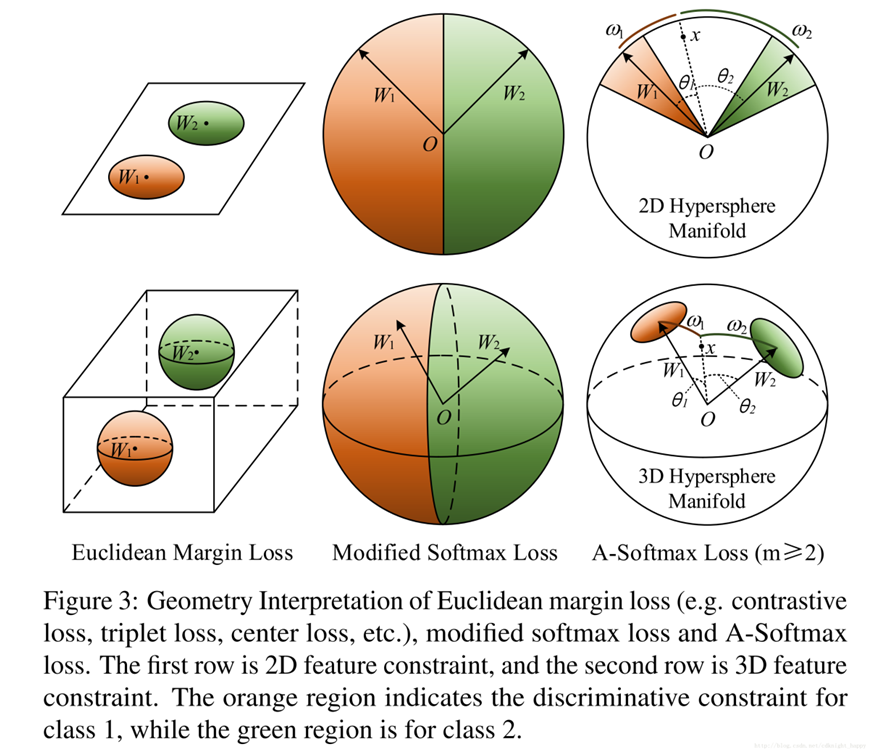
从几何角度看A-softmax loss，最优化A-Softmax损失本质上是使得学习到的特征在超球面上更加具有可区分性。
对于以上三种二分类问题的Loss的决策面，可以总结如下表：
AMSoftmax Loss#
AMSoftmax Loss是在Asoftmax上进行的改进，改进后的公式为： 其中，m的取值大小也在控制着了分类边界的大小。 下图为算法的几何解释：
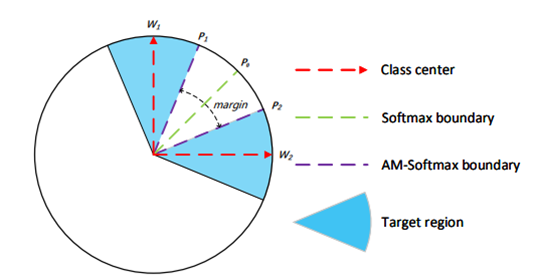
AcrFace/Insight Face#
尽管余弦边界从余弦空间到角空间是一对一的映射，这两个边界仍然有差别。事实上，角度边界比余弦边界有更加清晰的几何解释，角空间的边界在超球面流形上对应arc距离。我们增加了角边界ｍ在$\cos\theta$里面。 AcrFace公式如下： 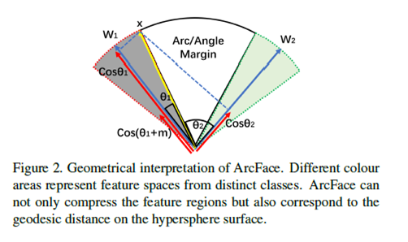
AcrFace是对AMSoftmax进行修改，这样修改的原因：角度距离比余弦距离在对角度的影响更加直接。
Center loss#
在通常的物体检测、场景分类和动作识别中，测试样本的类别事先是知道的，这种问题叫闭集问题（close-set problem）。预测出来的label对算法性能有决定性的影响，直接应用softmax loss就可以处理这类问题。这种情况下，深度神经网络中最后的全连接层就是一个线性分类器。而学习到的深层特征倾向于是可分的。 但是对人脸识别来说，特征不仅要求可分，同时还应该是判别性的。人脸识别中，测试集中的人可能在训练集中是没有出现过的，所以特征需要有判别性和泛化能力。这种判别性特征要求它类内的分布紧凑，类间相互分隔。softmax loss的缺点是它只会使得类间特征分离，并不会使属于同一类的特征积聚。这样的特征对于人脸识别来说不够有效。
Center loss函数公式为： 其中，$x_i$是样本i的特征， $C_{yi}$是第$y_i$类的特征中心。
CNN用softmax loss和center loss联合训练时，总的loss函数就是softmax loss和Center loss加权，用一个超参数来平衡这两个监督信号： 在每个mini batch的过程中，更新对应类的特征中心，有些类别的特征中心是没有更新的. 一些错误的样本可能会引起扰动，所以用$\alpha$控制center的学习率：
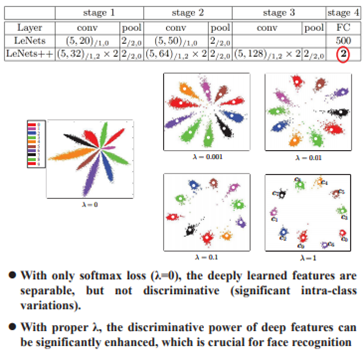
Focal loss#
在目标检测算法中，一张图像可能生成成千上万的候选点，但是其中只有很少一部分是包含目标物体的，这就带来了类别不均衡，负样本数量太大，占总的loss的大部分，而且多是容易分类的，因此使得模型的优化方向并不是我们所希望的那样。 因此针对类别不均衡问题，作者提出一种新的损失函数：focal loss。这个损失函数是在标准交叉熵损失基础上修改得到的。这个函数可以通过减少易分类样本的权重，使得模型在训练时更专注于难分类的样本。其中，增加了一个系数$\alpha_t$，当$label=1$的时候，$\alpha_t=\alpha$；当$label=-1$的时候，$\alpha_t=1-\alpha$，$\alpha$的范围也是0到1。因此可以通过设定$\alpha$的值（一般而言假如1这个类的样本数比-1这个类的样本数多很多，那么$\alpha$会取0到0.5来增加-1这个类的样本的权重）来控制正负样本对总的loss的共享权重。
显然前面的公式虽然可以控制正负样本的权重，但是没法控制容易分类和难分类样本的权重，于是就有了focal loss：
这里的$\gamma$称作focusing parameter，$\gamma=0$。在实践中，作者采用如下公式，即综合了上述两个公式的形式：
这里的两个参数$\alpha$和$\gamma$协调来 控制，论文作者采用$\alpha=0.25$，$\gamma=2$时效果最好。
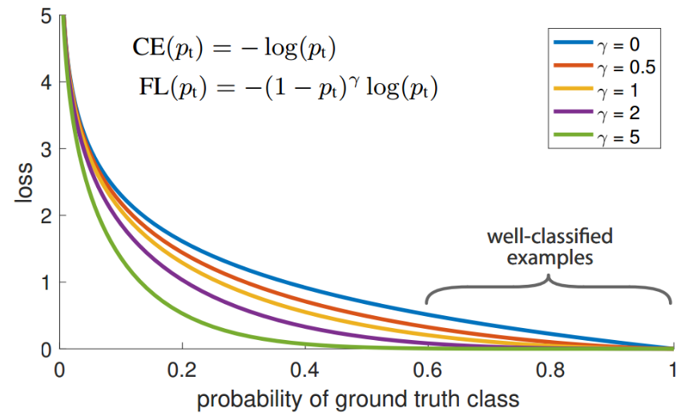
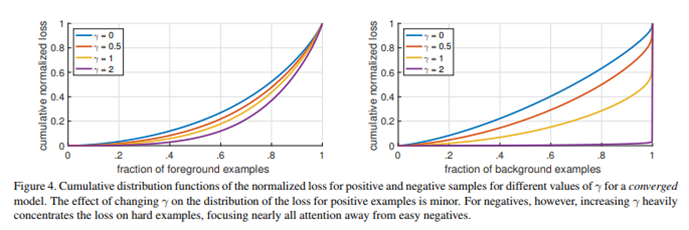
Contrastive Loss#
在caffe的孪生神经网络（siamese network）中，其采用的损失函数是contrastive loss，这种损失函数可以有效的处理孪生神经网络中的paired data的关系。contrastive loss的表达式如下：
其中$d=||a_n - b_n||_2 $，代表两个样本特征的欧氏距离，y为两个样本是否匹配的标签，y=1代表两个样本相似或者匹配，y=0则代表不匹配，margin为设定的阈值。
这种损失函数最初来源于Yann LeCun的Dimensionality Reduction by Learning an Invariant Mapping，主要是用在降维中，即本来相似的样本，在经过降维（特征提取）后，在特征空间中，两个样本仍旧相似；而原本不相似的样本，在经过降维后，在特征空间中，两个样本仍旧不相似。观察上述的contrastive loss的表达式可以发现，这种损失函数可以很好的表达成对样本的匹配程度，也能够很好用于训练提取特征的模型。当y=1（即样本相似）时，损失函数只剩下$\sum yd^2$，即原本相似的样本，如果在特征空间的欧式距离较大，则说明当前的模型不好，因此加大损失。而当y=0时（即样本不相似）时，损失函数为$\sum (1-y)max(margin-d,0)^2 $，即当样本不相似时，其特征空间的欧式距离反而小的话，损失值会变大，这也正好符号我们的要求。
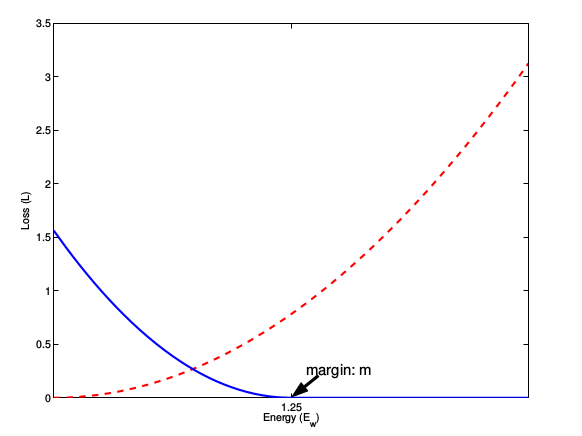
这张图表示的就是损失函数值与样本特征的欧式距离之间的关系，其中红色虚线表示的是相似样本的损失值，蓝色实线表示的不相似样本的损失值。
Normface#
现在需要做的事情就是train和test的时候给设计特征的正则化的操作。所以模型设计一个正规化层。特征在对比的时候使用归一化的cosine距离，即： 其中e的是一个正的数值主要目的就是X是0向量，其中x既可以代表f，也可以代表W的一组参数。 归一化之后的损失函数，即： 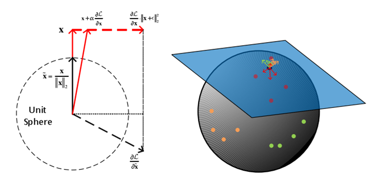
Triplet loss#
Anchor、Negative、Positive，如图所示通过Triplet Loss的学习后使得Positive元和Anchor元之间的距离最小，而和Negative之间距离最大。其中Anchor为训练数据集中随机选取的一个样本，Positive为和Anchor属于同一类的样本，而Negative则为和Anchor不同类的样本。这也就是说通过学习后，使得同类样本的positive样本更靠近Anchor，而不同类的样本Negative则远离Anchor。
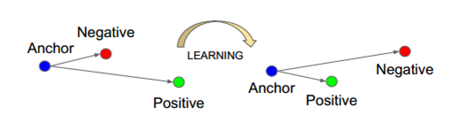
损失函数公式为：
Coco loss#
目的：
- 拉近同类样本的特征（类内方差小）
- 拉远不同分类样本的特征（类间方差大）
(1) 输入特征与中心特征归一化 (2) 计算输入特征与每个特征中心的Cos距离
由于输入特征和中心特征已经做过归一化，因此其Cos距离可以简化为： (3) 计算COCO loss 其中，B表示整个batch。分子项表示输入特征f(i) 与其对应的中心特征间的Cos距离；分母项表示输入特征到所有中心特征距离之和。 通过取负对数，我们会发现该Loss的优化目标是分子越大越好(类内Cos相似度高)，分母越小越好(类间Cos相似度低)。
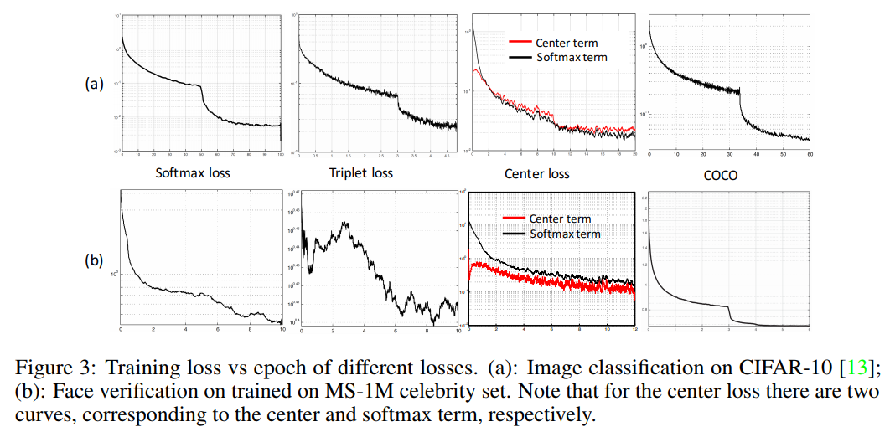